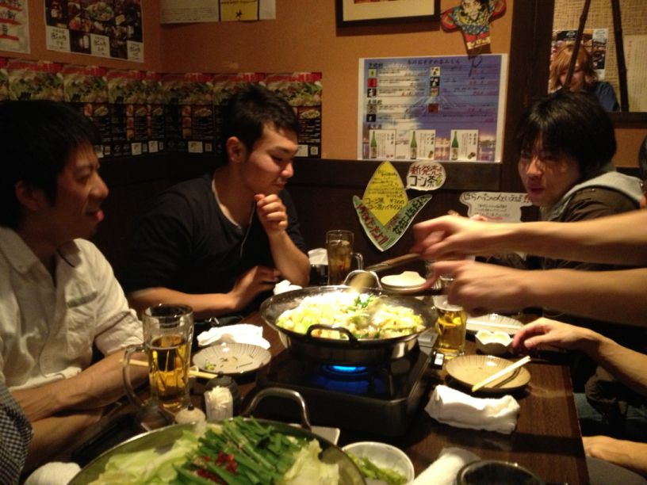
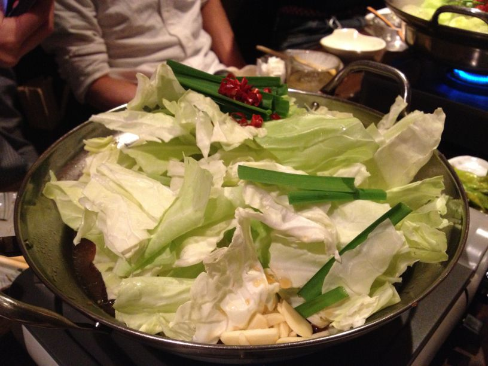
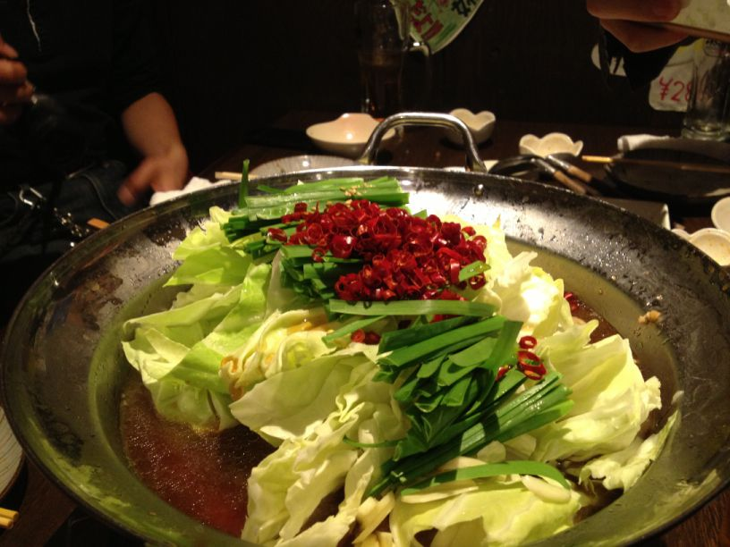
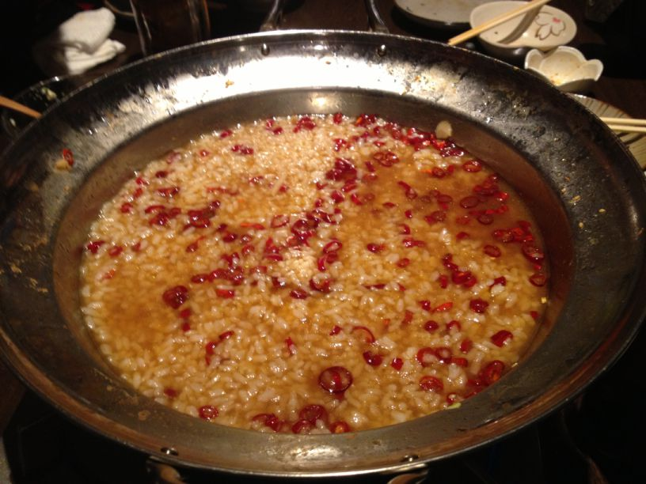
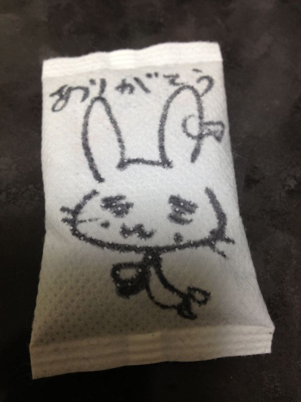

Python ボルダリング部 忘年会レポート¶
#kabepy Advent Calendar の11日目を書きます。 @kashew_nuts です。
去る12/8(土)に Python ボルダリング部の忘年会が行われました。今回はそのレポートをしたいと思います。昨年の12月に Python ボルダリング部が発足したので、実は今回が初の忘年会です。
イベントページ: Python ボルダリング部 #14 + 忘年会
忘年会の光景: kabepy 忘年会 2012
ロケーション¶
錦糸町駅から徒歩2分。南口改札を抜けて陸橋を斜め左に渡ると「みずほ銀行」があります。その「みずほ銀行」の裏の通りにありました。風情漂う木造作りに大きな提灯が目印。どこか懐かしい感じです。中に入ると、威勢の良いスタッフさんたちが迎えてくれました。
忘年会詳細¶
今回は博多のモツ鍋をいただける「 はらへった 」というお店に行きました。
席につくと、Facebook でチェックインするとドリンク1杯無料とのクーポンを見つけ、みなさん一斉にチェックイン。ここではまだモツ鍋が席に届いていないにも関わらず「モツ鍋うまい」という出すメンバーも:D
当日はアラカルトでの予約でしたので、メニューを見て好き好きに注文します。鍋ははもちろんモツ鍋を注文。
食事の間に話されたのみ壁のことが中心でした。プロテインの効率的なとり方についてや、来年1月に行われる Python mini hack-a-thon 雪山合宿 についてなど楽しく雑談しながら、食事に舌鼓を打つメンバー。
{kind=link}
思わずモツ鍋のおかわり。しかし、ここで異変が…… 「辛さが足りない。」 何と辛い物好きのメンバーによる鷹の爪を増量する行為が始まりました。これはいけない。通常の状態との比較をしてみますと、
通常Ver
{kind=link}
鷹の爪マシマシVer
{kind=link}
鷹の爪マシマシとかおかしい。 あまりの辛さに先程までの雰囲気は一変しました。。後にスタッフさんに聞いた所、「こんな色は初めて見ました。」とのこと。
何か別のメニューではないかと疑ってしまうほどのおじや
{kind=link}
おじやも博多麺も相当の辛さに。おじやは卵のおかげもあり、何とか行けましたが相当辛かったです……
最後に思わぬ事態も起きましたが、2時間余りの時を有意義に過ごすことができました。
解散¶
帰り際、はらへったのスタッフさんからプレゼントを頂きました。これです。
{kind=link}
何とイラスト入りのホッカイロを頂きました！実はこっそりと描いてくださっていたようです。それぞれが柄の違うホッカイロに感心しながら帰路につきました。
終わりに¶
忘年会は終わりましたが、壁納めはまだ終わっていません。また自主練で登ることでしょう。「また壁で。」と挨拶を交わし、解散いたしました。
{kind=link}